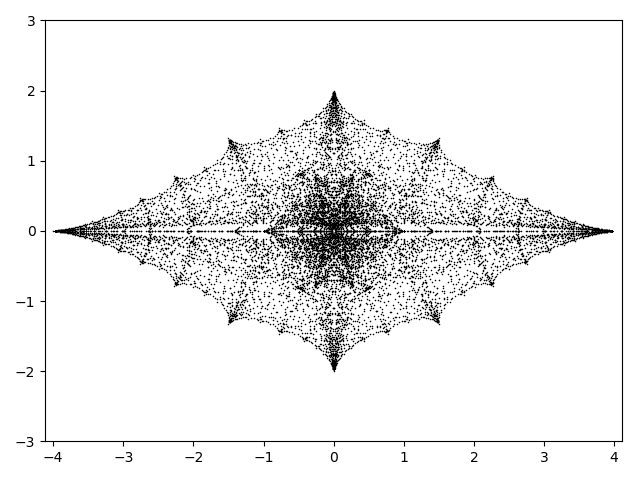

Alex Elzenaar
I (he/him) am at the Max-Planck-Institut für Mathematik in den Naturwissenschaften in Leipzig. I usually work in between the areas of geometric group theory, geometric topology, and metric geometry. I am particularly interested in modern classical geometry (for instance as studied by Coxeter and Thurston) and relationships with other branches of mathematics (knot theory, number theory, algebraic geometry, ...).
I am also interested in visualisation of mathematical objects (including mathematical art) and the study of mathematical writing.
In my childhood I was a fervent worshiper of the tiger. [...] I would stand for hours on end before one
of the cages at the zoo; I would rank vast encyclopaedias and natural history books by the splendour of
their tigers. [...] My childhood outgrown, the tigers and my passion for them faded, but they are still
in my dreams. In that underground sea or chaos, they still endure. As I sleep I am drawn into some dream
or other, and suddenly I realize that it's a dream. At those moments, I often think: This is a dream,
a pure diversion of my will, and since I have unlimited power, I am going to bring forth a tiger.
Oh, incompetence! My dreams never seem to engender the creature I so hunger for. The tiger does appear,
but it is all dried up, or it's flimsy-looking, or it has impure vagaries of shape or an unacceptable size,
or it's altogether too ephemeral, or it looks more like a dog or bird than like a tiger.
-- From Jorge Luis Borges, Dreamtigers. In The aleph (translated by Andrew Hurley), p.143. Penguin (2000).
Older quotes
Email address: elzenaar@mis.mpg.de
Here is my Curriculum Vitae.
Many of the things which I am interested in are very easy to start thinking about, even with no technical background. Some videos which I like include: Coxeter discusses the math behind Escher's circle limit (Harold Coxeter) Not Knot (The Geometry Center) Mathematics as Metaphor (Curtis McMullen) Doodling in Math: Spirals, Fibonacci, and Being a Plant (Vi Hart) How to write mathematics badly (Jean-Pierre Serre) Non-Euclidean virtual reality (Vi Hart, Andrea Hawksley, Sabetta Matsumoto, and Henry Segerman) The Suggestive Power of Pictures (Caroline Series) Knots Don't Cancel (John Conway) How to make mathematical candy (Jean-Luc Thiffeault) Maths Your Own Kaleidoscopic Shapes! (Matt Parker)
Some other geometric things which interest me: some sculptures around Pōneke/Wellington exhibition of the work of Hilma af Klint at the City Gallery in 2021-2022 Robin White: Making of That Vase Energy Work: Kathy Barry/Sarah Smuts-Kennedy (at Vic's Te Pātaka Toi Adam Art Gallery) "Rita" by Quentin Angus Patrick Pound at City Gallery Wellington Len Lye: A Colour Box, Colour Cry, Kaleidoscope
When I was an undergraduate at the University of Auckland I maintained a bibliography of short remarks about books.
Publications and preprints
- Proceedings article: Alex Elzenaar, Gaven Martin, and Jeroen Schillewaert. "Concrete one complex dimensional moduli spaces of hyperbolic manifolds and orbifolds". In: 2021-22 MATRIX annals. Ed. by David R. Wood, Jan de Gier, Cheryl E. Prager, and Terrence Tao. MATRIX Book Series 5. Springer, to appear. arXiv:2204.11422 [math.GT]. A version with minor corrections: PDF.
- Preprint: Alex Elzenaar, Gaven Martin, and Jeroen Schillewaert. "The combinatorics of the Farey words and their traces." April 2022. arXiv:2204.08076 [math.GT].
A version with minor corrections: PDF.
- Journal article: Alex Elzenaar, Gaven Martin, and Jeroen Schillewaert. "Approximations of the Riley slice." In: Expositiones Mathematicae (accepted 2023, in press). DOI:10.1016/j.exmath.2022.12.002. Preprint version: arXiv:2111.03230 [math.GT]. Corrected preprint: PDF
Selected talks
Here is material (e.g. lecture notes, slides) from selected talks I have given.
- (Upcoming) July 2023: Minicourse on knot theory and geometry at the University of Auckland, abstract.
- (Upcoming) 10 May 2023: Manifolds, braids, and hypergeometric functions, in the RePS at Universität Leipzig, draft slides.
- 17 to 20 January 2023: Apocrypha and ephemera on the boundaries of moduli space minicourse form at the Uni. of Auckland. See below!
- 10 October 2022: Uniformisation, equivariance, and vanishing: three kinds of functions hanging around your Riemann surface, at MPI, Lecture notes.
- 21 September 2022: What is a Kleinian group?, a talk aimed at undergraduates and beginning postgraduate students in the Australian Postgraduate Algebra Colloquium, slides, recording.
- 24 May 2022: Projective varieties over \(\mathbb{C}\), in the Lorentzian polynomials day which I organised, slides
- 4 May 2022: Pictures of hyperbolic spaces, in the Discrete Mathematics and Geometry Seminar (TU Berlin), slides
- 27 April 2022: Strange circles: The Riley slice of quasi-Fuchsian space, in the Seminar on Nonlinear Algebra (MPI MIS), slides
- 17 March 2022: Strange circles: The Riley slice of quasi-Fuchsian space, in Pedram Hekmati's seminar on moduli spaces (Uni. of Auckland), slides.
- 6 December 2021: The Farey polynomials, for the Groups and Geometry retreat on Waiheke Island, presentation slides.
- 2 December 2021: The Riley slice, contributed talk for the MATRIX workshop on groups and geometries, presentation slides, recording.
- 1 April 2021: Real varieties of spherical designs, in the Algebra and Combinatorics Seminar (Uni. of Auckland), presentation slides.
Representation of algebraic curves by Schottky groups

What is a Riemann surface?
- Analytically:
- A 2-dimensional manifold (or orbifold) admitting a chart of conformal maps into \( \mathbb{C} \) with conformal transition maps.
- Algebraically:
- An algebraic curve over \( \mathbb{C} \).
- Geometrically:
- The quotient of a 2-dimensional geometric manifold by a discrete group of isometries.
There are two kinds of theorems which relate the different viewpoints. First, theorems on rings of functions: the ring of global meromorphic functions on an analytic Riemann surface
is isomorphic to a one-dimensional function field over \( \mathbb{C} \) and defines a birationality class of algebraic varieties, setting up an equivalence between the analytic
and algebraic worlds. Secondly, uniformisation theorems. Traditionally, one uniformises general (genus \( \geq 2 \) ) analytic Riemann surfaces by Fuchsian groups,
i.e. one writes the surface as a quotient \( \mathbb{H}^2/G \) where \( G \) is a discrete group of hyperbolic isometries and is identified with the holonomy
group of the surface. However, it is also possible to uniformise all Riemann surfaces by a class of groups of isometries of \( \mathbb{H}^3 \)! This is the class
of Schottky groups.
In an upcoming paper with Samantha Fairchild and Angel David Rios Ortiz we analyse (following earlier work
of Rubén Hidalgo among others) the procedure to go from a Schottky group to the corresponding birationality class of algebraic curves.
In addition, some thoughts on relationships between moduli of Schottky groups and moduli of algebraic curves.
Related to this upcoming paper, I survey the three different worlds and some classical theorems (with many examples of Kleinian and Fuchsian groups)
in the notes Uniformisation, equivariance, and vanishing—Three kinds of functions hanging around your Riemann surface.
Apocrypha and ephemera on the boundaries of moduli space

Henry Moore: Bronze Form (1988). In situ, Wellington Botanic Garden ki Paekākā.
I will teach a minicourse at UoA from
16 17--20 Jan 2023. The goal (which will not be achieved, but we will get some way towards it) is to explain the rough structure of the following equivalent
objects: (i) the moduli space of Schottky groups; and (ii) the space of hyperbolic 3-manifolds with visual boundary a compact Riemann surface (handlebody). In the process we will learn some of
the Birman theory of braid groups, some knot theory, some of the quasi-conformal deformation theory of Kleinian groups, and a lot of geometric topology. The only prerequisite is comfort thinking
about quotients in metric spaces and some algebraic topology, but we will go fast and so you should expect to lose track of some details fairly quickly. To try to fix this I will also be handing
out problem sheets (which will include some "basic" problems, some research level problems, and some computational problems). Each lecture should also be fairly self-contained. People who attended
the graduate seminar/course I taught in Sem 1 of 2021 will find things easier but it is not necessary at all for you to have followed that. The talk in
Nelson
by Benson Farb is also very good preparation.
I anticipate 5 lectures, at 2PM every day in 303.257 (this schedule is only guaranteed for the first talk, I think some of the more enthusiastic people will want more time to discuss the ideas and
so we will wing it as we go). The lectures will be:-
- A crash course in Kleinian groups problems
- Sociology problems
- B-groups and other degeneracies problems
- Braids, links, and mapping class groups
- ???
I have written some
rough notes which indicate the direction of the conjectured moduli space structure. These notes are not complete.
Background reading
The length of this list is an indication of width not depth.
- Alex Elzenaar, Gaven Martin, and Jeroen Schillewaert, Concrete one complex dimensional moduli spaces of hyperbolic manifolds and orbifolds
- Bernard Maskit, Kleinian groups (Springer)
- Jessica Purcell, Hyperbolic knot theory (AMS)
- William Thurston, Three-dimensional geometry and topology (Princeton) and The geometry and topology of three-manifolds
- Michael Kapovich, Hyperbolic Manifolds and Discrete Groups (Birkhaüser)
- Benson Farb, Dan Margalit, A Primer on Mapping Class Groups (Princeton)
- Joan Birman, Braids, Links, and Mapping Class Groups (Princeton)
- David Mumford, Caroline Series, and David Wright, Indra's pearls (Cambridge)
MSc. thesis: Deformation spaces of Kleinian groups
My
Master of Science thesis was completed in 2021-22 in the Department of Mathematics at the
University of Auckland, under the supervision
of Dist. Prof. Gaven Martin (NZ Institute of Advanced Study, Massey University) and Dr. Jeroen Schillewaert.
Abstract. It has been known since at least the time of Poincaré that isometries of 3-dimensional hyperbolic space \( \mathbb{H}^3 \) can be represented by \( 2 \times 2\) matrices over the complex numbers: the
matrices represent fractional linear transformations on the sphere at infinity, and hyperbolic space is rigid enough that every hyperbolic motion is determined by such an action at infinity.
A discrete subgroup of \( \mathrm{PSL}(2,\mathbb{C}) \) is called a Kleinian group; the quotient of \( \mathbb{H}^3 \) by
the action of such a group is an orbifold, and its boundary at infinity is a (possibly empty or disconnected) Riemann surface.
The Riley slice is the moduli space of Kleinian groups generated by a pair of parabolic elements which are free on those generators and whose corresponding surface is supported on a
4-punctured sphere; Robert Riley introduced this object in the 1970s while studying 2-bridge knot groups. The Riley slice is naturally embedded in \( \mathbb{C} \) and so is particularly amenable to
study since one can draw pictures of it. Linda Keen and Caroline Series studied this embedding in the early 1990s via a family of polynomials
which gave a foliation (local product decomposition) of the slice. We will discuss the Keen--Series theory and extend it to allow torsion elements as generators. We also discuss some new results
of a combinatorial flavour and some applications. We aim for the exposition to be accessible to beginning graduate students, despite the high bar for entry to this subject in terms of prerequisite material.
If this sounds interesting, you might want to start with our expository article
Concrete one complex dimensional moduli spaces of hyperbolic manifolds and orbifolds
which we wrote to give historical and mathematical background: we aimed for this to be accessible to beginning graduate students with only a little complex analysis and topology knowledge.
My
thesis gives more detailed background to the study of quasiconformal deformation spaces and the relevant knot theory and low-dimensional topology, with references to graduate
textbooks and the original literature, before discussing our new results. For the new results please cite our papers which are based in part on the thesis rather than the thesis itself, as this was joint work:
| Slides for talks and other interesting links |
Here is a picture of the exterior of the Riley slice:

|
- Talk on computation and visualisation in hyperbolic geometry, in the Discrete Mathematics and Geometry Seminar at TU Berlin, 4 May 2022: presentation slides.
- The Riley slice as a moduli space, in the MPI MiS Seminar on Nonlinear Algebra,
27 April 2022: presentation slides.
- Talk in Pedram Hekmati's seminar on moduli spaces, 17 March 2022: presentation slides.
- Waiheke workshop, 6 December 2021: presentation slides on the Farey polynomials.
- Contributed talk for the MATRIX workshop on groups and geometries
discussing recent work done jointly with Gaven Martin and Jeroen Schillewaert, 2 December 2021: presentation slides.
- Half-year Postgraduate Project Presentations talk, July 2021: Presentation slides.
- Talk for the UoA Dept. of Mathematics Student Research Conference, June 2021: Extended abstract; presentation slides.
- Very rough lecture notes for the informal graduate seminar I taught on Kleinian groups in Semester 1, 2021: PDF 1,
PDF 2, further reading list, and post-mortem.
- Riley slice computational package (GitHub).
- Some animations, and some limit sets. Some more visually impressive animations can be
found on the website of David Dumas.
|

|
Lorentzian polynomials and algebraic geometry on matroids
If \( X \) is a sufficiently nice variety, the Chow group \( A^*(X) \) provides a homology theory on \( X \); in fact, it admits a ring structure coming from the intersection product. It turns out
that such a theory can be made to work on more general spaces, for example one can define a Chow ring for matroids; then the various Hodge-type results (Poincaré duality, the hard Lefschetz theorem,
and the Hodge-Riemann relations) carry over. Various nice polynomials can be defined with respect to this generalised Hodge theory and the associated cones of 'ample divisors' (which turn out
to be submodular functions); these are the
Lorentzian polynomials of Brändén and Huh.
A Day of Geometry and Lorentzian Polynomials
At the end of May 2022 there was a
seminar at the Institut Mittag-Leffler on the work of Branden, Huh, Katz, and various
other people on Lorentzian polynomials and the geometry of matroids; before this event on
Tuesday 24 May, I organised a very informal Zoom workshop on some of the geometric background
material.
Abstract.
Even if you do not know what Lorentzian polynomials are, you may have heard of Minkowski volume polynomials, the polynomials of the form \( \mathrm{vol}(x_1 K_1 + \cdots + x_n K_n) \)
where \( K_1,\ldots,K_n \) are convex bodies—and these are somehow the "canonical examples" of Lorentzian polynomials. The goal of the workshop is to give many different examples of Lorentzian
polynomials arising in geometry. The talks will be very informal, non-technical, and have many pictures.
The final schedule was as follows (all times are CET). Many of the speakers have kindly allowed me to share their slides and/or lecture notes.
- 9.30am—Matroids and chromatic polynomials (Tobias Boege, MPI MiS): Slides
- 10:15am—Varieties over C and embeddings into projective space via elliptic curves (Lukas Zobernig, The University of Auckland): Slides
- 11:00am—Hyperbolic polynomials (Hisha Nguyen, V.N. Karazin Kharkiv National University)
- Break (hopefully the morning talks are finished by 11:45, or 12 at the latest if we run over time).
- 1:30pm—Convex geometry & mixed volumes (Mara Belotti, TU Berlin): Slides
- 2:15pm—Projective varieties over \( \mathbb{C} \) (Alex Elzenaar, MPI MiS): Slides
Some background material
Spherical designs
A spherical \((3,3)\)-design in \( \mathbb{R}^3 \) of 16 vectors.
Spherical \((t,t)\)-designs are arrangements of points on the sphere (possibly with weights) which are spaced 'far apart from each other': they are finite sets in \( \mathbb{R}^d \)
such that the integral over the sphere of each homogeneous polynomial of degree \(2t\) in \( d \) variables is equal to its average value on the set. There are generalisations
of this definition to subsets of \( \mathbb{C}^d \) and \( \mathbb{H}^d \) (the \(d\)-fold product of the Hamiltonian quaternion algebra, not hyperbolic \(d\)-space!).
Optimal designs and near-designs
Shayne Waldron and I have a paper in preparation:
Putatively optimal projective spherical designs with little apparent symmetry,
computing various spherical designs in order to find those of minimal order; a large set of designs and near-designs are archived on on Zenodo
at
DOI:10.5281/zenodo.6443357. You can look at the code used to generate these
on
GitHub; it uses the
Manopt optimisation toolbox. This work was was funded in
part by a University of Auckland Summer Research Scholarship (2019-20). You can view the
final report for the scholarship.
Spherical designs and sums of squares
BSc(Hons) dissertation: Toric Varieties
I completed my BSc(Hons) dissertation in 2020 under the supervision of Dr. Jeroen Schillewaert.